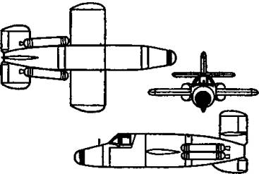
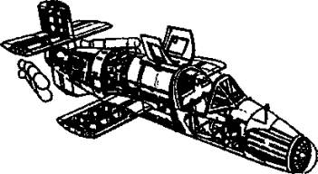
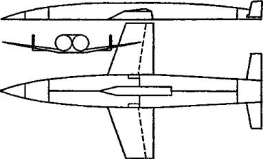
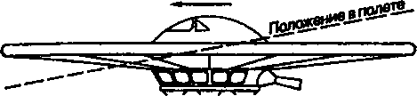
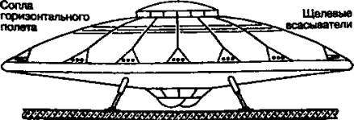

Ракетопланы рейха
Историки техники вообще, в особенности техники военной, давно уже подметили, что изделия конструкторов разных стран частенько бывают похожи друг на друга, как родные братья. Отчасти это происходит потому, что конструкторам приходится решать сходные задачи, а стало быть, получать и одинаковые ответы. Кроме того, всегда, во все времена активно работала и работает военная разведка, предоставляя своим конструкторам лучшие образцы чужого творчества.
В общем, так или иначе, но в Германии, как и в России, тоже пережили период увлечения космопланами.
ПРОЕКТЫ «ХЕЙНКЕЛЯ». В то время как Вернер фон Браун и его коллеги создавали боевые ракеты, конструкторы люфтваффе, кроме Фау-1, создали немало интересных проектов летательных аппаратов как с воздушно-реактивными, так и с ракетными двигателями.
Например, еще в начале 30-х годов XX века фирмой «Хейнкель» был построен экспериментальный самолет Не-112. Машина предназначалась только для изучения принципа реактивного движения, а потому ее характеристики особо не впечатляли. Собственная скорость самолета составляла 300 км/ч и увеличивалась до 400 при включении реактивной тяги. Попытка увеличить скорость привела к тому, что в одном из полетов Не-112 разбился, развив скорость 458 км/ч.
Конструкторам «Хейнкеля» пришлось отказаться от ракетного двигателя А-1, не имевшего регулировки тяги, и попробовать заменить его двигателем ТР-1 (конструкция Гельмута Вальтера), работавшим на перекиси водорода. Попытка оказалась удачной, тем более что специально для самолетчиков был создан ТР-2 с регулятором тяги. Это позволило конструктору Гансу Регнеру и его команде в конце 1937 года приступить к созданию Не-176 — небольшого самолета с предельно «зализанными» аэродинамическими формами.
Кроме хорошо продуманного внешнего вида, самолет имел еще немало новшеств. Так, скажем, передняя часть фюзеляжа представляла собой сбрасываемую в случае аварии кабину — подобные только-только начинают внедрять на сверхскоростных самолетах.
Первый полет этого ракетоплана состоялся 20 июня 1939 года и продлился 50 секунд. Однако, несмотря на все старания инженеров фирмы «Хейнкель», Не-176 так и не удалось разогнать выше скорости в 346 км/ч при проектной в 750 км/ч.
В ходе войны инженеры «Хейнкеля» не раз возвращались к идее создания ракетного самолета па базе истребителя Не-162. Однако ни один из этих проектов так и не был доведен до серийного выпуска.

Проект «ВР-20» Э. Бахэма.
«БЕСХВОСТКИ» ЛИППИША. Как и наши конструкторы, их немецкие коллеги «переболели» и ракетопланами, создаваемыми по схеме «бесхвостка». Для этого при Институте исследований в области планеризма была создана специальная конструкторская группа под руководством Александра Липпиша. Они спроектировали, а завод «Хейнкель» изготовил два экземпляра машины, получившей обозначение DFS-39. Однако испытания этой машины не принесли ожидаемых результатов.
Тогда модель «бесхвостки» продули в Геттингенской аэродинамической трубе. Эксперименты показали, что устойчивость ракетоплана значительно увеличится, если использовать скошенные назад крылья с нулевым углом атаки. Новая машина была названа DFS-194.
Однако из-за задержки поставки двигателей Вальтера самолет пришлось оснастить поршневым двигателем воздушного охлаждения с толкающим винтом, размещенным в задней части фюзеляжа. В таком виде машина прошла ряд летных испытаний, но до серии так и не дошла.
Тогда, разозленный проволочками как со стороны Вальтера, так и со стороны «Хейнкеля», Липпиш решил переметнуться к Мессершмитту, который в итоге и получил контракт Министерства авиации на создание нового ракетного самолета. Так на свет появился DFS-346 — самолет-разведчик, который, по идее, должен был втрое превысить скорость звука и достичь высоты 35 км! И это, заметьте, еще в 1944 году.
Для достижения намеченной цели экспериментальный DFS-346 оснастили двухкамерным ракетным двигателем «Walter HWK 109-509С» тягой в 2 т. Да и сам самолет во многом напоминал ракету длиной 12 м, с размахом крыла 9 м. Пилот должен был управлять им, лежа на животе в герметично отделяемой кабине. В качестве посадочного шасси использовалась лыжа, а поднимать аппарат в воздух должен был либо самолет-носитель, либо он взлетал с помощью катапульты со специальной тележки.

Компоновка перехватчика Ва-349.
Однако довести этот проект немцы уже не успели. Единственный экземпляр DFS-346 был уничтожен в апреле 1945 года.
КРЫЛЬЯ МЕССЕРШМИТТА. А вот ракетоплану DFS-194 или Me-163 повезло несколько больше. Эту машину с размахом крыла 10,6 м, длиной фюзеляжа 6,4 м и взлетным весом 2,4 т успели не только построить, но и испытать.
Летные испытания проводил знаменитый планерист, чемпион мира 1937 года капитан Хейни Дитмар, ранее уже поднимавший несколько аппаратов конструкции Липпиша. Первый раз он взлетел 2 июня 1940 года. И затем летал еще несколько раз, постепенно наращивая скорость, пока не достиг показателя 547 км/ч.
В немалой степени успеху способствовал усовершенствованный ракетный двигатель «Walter HWK R.II. 203», тягу которого теперь можно было регулировать в пределах от 150 до 750 кг.
Самолетом заинтересовались представители люфтваффе, и специально для них было построено еще четыре экспериментальные машины. Летные испытания в безмоторном режиме проводил опять-таки Дитмар, но дважды при посадке промахивался мимо полосы, поскольку отсутствие закрылков сделало ракетоплан трудно управляемым.
Тем не менее Me-163 VI — такое наименование получила эта модификация — был признан хорошим. И летом 1941 года было сделано 6 опытных самолетов, которые уже оснастили ракетными двигателями HWK с тягой 750 кг. На одном из них в августе 1941 года Дитмар поставил мировой рекорд скорости, достигнув 900 км/ч. Потом он достиг и 1004 км/ч в горизонтальном полете, но чуть не разбился, поскольку самолет перестал слушаться управления и вошел в пике. Однако летчику удалось сбросить скорость, овладеть управлением и благополучно приземлиться.
Впрочем, рекорды рекордами, но война продолжалась, и ей нужны были боевые машины. А истребитель, расходовавший запас топлива всего за несколько минут, назвать боевым было трудно.
Тем не менее в 1943 году было создано секретное подразделение «Erprobundskommando 16» («Ekdo 16»), к которому стали прикомандировывать наиболее подготовленных пилотов. Их стали готовить к полетам на новом самолете, получившем к тому времени официальное наименование «Messerschmitt Me-163 Komet» («Комета»).
Летать на нем оказалось весьма непросто. Самолет стремительно стартовал и менее чем за минуту скрывался из виду; и лишь дымный шлейф позволял понять, куда делся самолет. Однако и на сам полет пилоту отводилось 5–6, во всяком случае, не более 10 минут. За это время он должен был отыскать цель, атаковать ее, развернуться и зайти на посадку с уже пустыми баками на скорости порядка 220 км/ч. Любая ошибка пилотирования могла стать последней в жизни пилота, поскольку возможности уйти на второй круг у него не было.
Пришлось дорабатывать самолет, идя на компромиссы. В конце концов после переделок и усовершенствований на свет появился, по существу, другой самолет, получивший обозначение Me-163D. У него был более длинный (на 0,85 м) фюзеляж, вмещавший больше топлива. Дополнительные баки были размещены и в крыльях Сбрасываемая тележка и выдвижная лыжа были заменены классическим шасси, убиравшимся после взлета. Вооружение Me-163D составили две пушки калибром 30 миллиметров, размещенные в крыльях.
Весной 1944 года начались испытания. Но вскоре выяснилось, что фирма Мессершмитта уже просто не имеет необходимого количества специалистов, чтобы довести Me-163D до серийного производства. В результате поступило распоряжение перевести работы на завод фирмы «Юнкере» в Дассау.

Орбитальный бомбардировщик Э. Зенгера.
Под руководством профессора Генриха Хертеля ракетоплан несколько перепроектировали, после чего он был назван Ju-248. Самолет получил более удобный каплевидный фонарь с хорошим обзором, неподвижные предкрылки были заменены на автоматические, а площадь закрылков для лучшей управляемости при посадке увеличили.
Для защиты пилота поставили бронеплиты, еще увеличили запас топлива и боекомплект.
Но война уже стремительно приближалась к концу, так что взлететь и этому самолету было не суждено. Единственный построенный прототип Ме-263-VI, а также недостроенный двухместный учебный вариант Me-163S достались нашим трофейщикам вместе с другими экспериментальными новинками.
Мы не будем рассказывать обо всех подробно, а остановим свое внимание на одной конструкции, которая, хотя и не была построена, заинтересовала наших специалистов, пожалуй, больше других.
БОМБАРДИРОВЩИК ЗЕНГЕРА. Известный конструктор советской ракетной техники, член-корреспондент РАН Борис Евсеевич Черток как-то припомнил такой случай. Когда в конце Второй мировой войны ряд советских конструкторов, среди которых были С. П. Королев, сам Б. Е. Черток и другие, были командированы в Германию, среди прочего на свалке нашим специалистам удалось обнаружить и отчет, выпущенный в 1944 году весьма ограниченным тиражом (100 экземпляров) под грифом «Совершенно секретно». В работе, озаглавленной «Дальний бомбардировщик с ракетным двигателем», ее авторы — Э. Зенгер и И. Бредт — на основе номограмм и графиков показывали, что с предлагаемым ими жидкостным ракетным двигателем тягой в 100 т возможен полет на высотах 50-300 км со скоростями 20 000-30 000 / и дальностью полета 20 000-40 000 км!
В отчете были также подробно описаны физико-химические процессы сгорания топлива при высоких давлениях и температурах, энергетические свойства топлива, включая эмульсии легких металлов в углеводородах; предложена схема замкнутой прямоточной паросиловой установки в качестве системы, охлаждающей камеру сгорания и приводящей в действие турбонасосный агрегат.
Имя австрийского инженера Эйгена Зенгера уже было известно нашим специалистам. Он начал карьеру специалиста-ракетчика еще до войны с серии испытаний ракетных двигателей в лабораториях Венского университета. В то время он работал главным образом с одной моделью — сферической камерой сгорания диаметром около 50 мм. Сопло двигателя было необычайно длинным (25 см), причем диаметр среза сопла равнялся диаметру камеры сгорания. Камера сгорания и примыкающая к ней часть сопла были снабжены рубашкой охлаждения, в которую под большим давлением подавалось топливо. Оно выполняло две функции: охлаждало камеру сгорания и компенсировало давление, создаваемое в ней продуктами сгорания.
Время работы двигателей Зенгера было необычно большим. Испытание продолжительностью 15 минут являлось для него вполне нормальным. Двигатели развивали тягу порядка 25 кг, при этом скорость истечения составляла, как правило, 2000–3500 м/сек. Зенгер еще тогда был уверен — и дальнейшее развитие ракетной техники подтвердило правильность его взглядов, — что проблемы создания более крупных ракетных двигателей практически вполне разрешимы.
И тут надо, наверное, сказать, что Зенгер потряс своим проектом не только советских, но и американских исследователей. Никто из них и понятия не имел о самолете, имеющем скорость, в 10–20 раз превышающую скорость звука. В отчете же подробно описывалась не только аэродинамика такого полета, но и все особенности конструкции, динамика ее взлета и посадки. Особо тщательно — видимо, чтобы заинтересовать военных — были проработаны проблемы бомбометания с учетом огромной скорости бомбы, сбрасываемой с такого самолета задолго до подхода к цели.
Интересно, что уже тогда, в начале 40-х годов, Зенгер и Бредт показали, что для космического самолета старт без вспомогательных средств вряд ли возможен. Космический самолет должен был стартовать при помощи катапульты. Авторы писали:
«Взлет осуществляется при помощи мощного ракетного устройства, связанного с землей и работающего в течение примерно 11 секунд. Разогнавшись до скорости 500 м/с, самолет отрывается от земли и на полной мощности двигателя набирает высоту от 50 до 150 км по траектории, которая вначале наклонена к горизонту под углом 30°, а затем становится все более и более пологой…
Продолжительность подъема составляет от 4 до 8 минут. В течение этого времени, как правило, расходуется весь запас горючего… В конце восходящей ветви траектории ракетный двигатель останавливается, и самолет продолжает свой полет благодаря запасенной кинетической и потенциальной энергии путем своеобразного планирования по волнообразной траектории с затухающей амплитудой…
В заранее рассчитанный момент бомбы сбрасываются с самолета. Самолет, описывая большую дугу, возвращается на свой аэродром или на другую посадочную площадку, бомбы, летящие в первоначальном направлении, обрушиваются на цель…
Такая тактика делает нападение совершенно не зависящим от времени суток и погоды над целью и лишает неприятеля всякой возможности противодействовать нападению… Соединение из ста ракетных бомбардировщиков способно в течение нескольких дней подвергнуть полному разрушению площади, доходящие до размеров мировых столиц с пригородами, расположенные в любом месте поверхности земного шара».
Общий взлетный вес конструкции бомбардировщика составлял 100 т, из них 10 т — вес бомб. За счет уменьшения дальности полета вес бомбовой нагрузки мог быть увеличен и до 30 т.
Таким образом, еще в разгар Второй мировой войны специалисты Третьего рейха предлагали бомбардировщик, применение которого (да еще в сочетании с атомной бомбой) могло повернуть ход истории. Но почему же на его исполнение не были брошены все силы немецкой индустрии?
Причин тому несколько. Во-первых, когда нацистская Германия напала на СССР, успех первых месяцев войны показался немцам настолько многообещающим, что Гитлер приказал прекратить разработку всех футуристических проектов.
Когда же выяснилось, что военные действия затягиваются, в конфликт втянулись и США, Гитлер спохватился. И приказал разработать план бомбардировки Нью-Йорка и Вашингтона. Тут, казалось бы, самое время вспомнить о самолете Зенгера. И о нем вспомнили — тому свидетельство секретный отчет.
Однако в ракетных кругах проект Зенгера был воспринят весьма настороженно: его осуществление могло помешать программе создания ракеты Фау-2 и другим ракетным программам. И, воспользовавшись тем, что речь тут шла все-таки о самолете, ракетчики спихнули проект чинам люфтваффе.
Ну, а там посчитали, что такой проект потребует не менее 4–5 лет напряженной работы. До него ли сейчас? Да и вообще Зенгер с Бредтом были чужаками среди авиаторов…
В общем, проект потихоньку спустили на тормозах и постарались о нем не напоминать начальству.
Но насколько он все же реален? В этом и попытались разобраться наши специалисты, командированные в Германию. Прилетевший в июне 1945 года в Берлин из Москвы заместитель генерального конструктора нашего ракетного самолета БИ-2 В. Ф. Болховитинова профессор МАИ Генрих Наумович Абрамович, познакомившись с трудом Зенгера, сказал, что такое обилие газокинетических, аэродинамических и газоплазменных проблем требует глубокой научной проработки. И до конструкторов дело дойдет, дай бог, лет через десять.
Но и он оказался чрезмерным оптимистом. Ныне мы можем сказать, что предложение Зенгера опередило время по крайней мере на 25 лет. Первый космический самолет «Спейс шатл» полетел впервые только в 1981 году. Но он стартовал вертикально, как вторая ступень ракеты. А настоящего воздушно-космического аппарата с горизонтальным стартом нет до сих пор.
Правда, в ФРГ с 70-х годов прошлого века разрабатывалась воздушно-космическая система, названная в честь пионера этой идеи «Зенгер». От проекта 40-х годов она отличается тем, что горизонтальный разгон осуществляет не катапульта, а специальный самолет-разгонщик, на спине которого укреплен собственно космический самолет, способный вывести на околоземную орбиту высотой до 300 км те же 10 т полезной нагрузки.
Однако Эйгену Зенгеру в 1944 году и не снились те материалы, двигатели, методы навигации и управления, с которыми работают теперь ученые. В конце концов, видимо, он и сам понял фантастичность своей разработки. Он умер относительно недавно, в конце прошлого столетия, примирившись с мыслью, что так и не увидит самолета, названного его именем.
ЕЩЕ О «ЛЕТАЮЩИХ ТАРЕЛКАХ». И наконец, давайте вспомним еще об одном загадочном проекте нацистов. Сразу после окончания Второй мировой войны пошли слухи, будто немцами были построены и испытаны какие-то «летающие диски» («Deutsche Flilgscheibe»). (Название «летающие тарелки» было придумано позднее.)
Честно сказать, лично я отношусь к возможности создания «летающих тарелок» как таковых достаточно скептично. Летательные аппараты дисковой формы, использующие известные нам законы аэродинамики, как правило, получаются весьма неустойчивы в полете. Так что данная форма может оказаться рациональной лишь при создании, скажем, «гравитолетов», до которых нам пока далеко.
Тем не менее, когда в мои руки попали записки ныне уже покойного Василия Константинова (вынужденного эмигранта, бывшего военнопленного), я постарался их опубликовать. Тем более что они попали на родину не простым, а кружным путем, с помощью инженера Константина Тюца, встречавшегося с их автором во время одной из зарубежных командировок, в августе 1987 года, в Уругвае.
В лагерь военнопленных Константинов попал не по своей воле. Во время отступления 1941 года под Киевом во время бомбежки его тяжело контузило. Очнулся он уже в плену…
Помыкался бывший солдат изрядно. Но один случай запомнился ему особенно.
«В августе 1943 года часть заключенных, и я в том числе, была переброшена в Пенемюнде, в лагерь КЦ-А-4», — рассказывал Константинов. Здесь-то спустя месяц ему и довелось стать невольным свидетелем неких испытаний. Когда всех заключенных увели на обед, Василий был вынужден остаться, поскольку подвихнул ногу и не мог двигаться быстро. Сделал повязку и решил немного отлежаться в разбираемых завалах.
Вот тут он и увидел, как на бетонную площадку возле одного из близстоящих ангаров четверо рабочих выкатили круглый, похожий на перевернутый вверх дном тазик аппарат с прозрачной каплеобразной кабиной посередине. И на маленьких надувных колесах.
Затем по взмаху руки невысокого грузного человека странный тяжелый аппарат, отливавший на солнце серебристым металлом и вздрагивавший при каждом порыве ветра, издал шипящий звук вроде шума паяльной лампы, оторвался от бетонной площадки и завис на высоте примерно пяти метров. Недолго покачавшись в воздухе — наподобие «ваньки-встаньки», — аппарат вдруг как бы преобразился, его контуры стали постепенно расплываться. Они как бы расфокусировались.
«Затем аппарат резко, как юла, подпрыгнул и змейкой стал набирать высоту, — писал Константинов. — Полет, судя по покачиванию, проходил неустойчиво. Внезапно налетел порыв ветра с Балтики, и странная конструкция, перевернувшись в воздухе, резко стала терять высоту. Меня обдало потоком гари, этилового спирта и горячего воздуха. Раздался удар, хруст ломающихся деталей — машина упала недалеко от меня. Инстинктивно я бросился к ней. Нужно спасти пилота — человек же! Но тело пилота уже безжизненно свисало из разбитой кабины, обломки обшивки, залитые горючим, постепенно окутывались голубоватыми струйками пламени. Резко обнажился еще шипевший реактивный двигатель — в следующее мгновение все было объято огнем…»
«МОДЕЛИ» ТАК И НЕ ВЗЛЕТЕЛИ. Что за странный аппарат видел заключенный концентрационного лагеря КЦ-А-4? До наших дней дошла информация почти о десятке технических проектов, которые можно классифицировать как проекты «летающих дисков».
Первую попытку создания самолета с крутым крылом предпринял еще в 1909 году русский изобретатель Анатолий Георгиевич Уфимцев. Механик-самоучка, без специального образования, он построил четыре оригинальных авиационных двигателя и два самолета под названием «Сфероплан».
Однако ни одному из них не суждено было толком подняться в воздух. Все они оказались неустойчивы и разрушались при попытке взлететь.
Тем не менее в первой половине XX века конструкторы США, Франции и некоторых других стран неоднократно обращались к дисковидной форме летательных аппаратов. Наиболее серьезно, пожалуй, подошли к делу инженеры Третьего рейха.
«Модель-1» («Колесо с крылом») дискообразного летательного аппарата была построена немецкими инженерами Шривером и Габермолем еще в 1940 году, а испытана в феврале 1941 года близ Праги. Эта «тарелка» считается первым в мире летательным аппаратом вертикального взлета. По конструкции она несколько напоминала лежащее велосипедное колесо: вокруг кабины вращалось широкое кольцо, роль «спиц» которого выполняли регулируемые лопасти. Их можно было устанавливать в необходимые позиции как для горизонтального, так и для вертикального полета. В качестве силовой установки использовались как обычные поршневые двигатели, так и двигатели Вальтера.
Эта машина создала своим конструкторам немало проблем. Ибо малейший дисбаланс вызывал значительную вибрацию, что часто служило причиной аварий.
«Модель-2» («Вертикальный самолет», или Фау-7) представляла собой усовершенствованный вариант предыдущей. Конструкторы увеличили ее размеры, чтобы разместить двух пилотов, повысили мощность моторов, увеличили запасы топлива…

«Модель-1» — «колесо с крылом».
Испытания Фау-7 состоялись 17 мая 1944 года. Скороподъемность этого аппарата достигала 288 км/ч, скорость горизонтального полета — 200 км/ч. Как только набиралась нужная высота, несущие лопасти изменяли свою позицию, и «диск» двигался подобно современным вертолетам, мало чем от них отличаясь.
Другая модификация «Модели-2» — под названием «Дисколет» — была собрана на заводе «Ческо Морава» и испытана 14 февраля 1945 года. На ней был установлен жидкостно-реактивный двигатель Вальтера, а главный ротор приводился во вращение с помощью сопел, расположенных на концах лопастей.
Впрочем, и этим двум проектам было суждено остаться на уровне опытных образцов.
«Диск Беллонце», или «Модель-3», над которой работали три немецких конструктора — Беллонце, Шривер и Мите, — была выпущена в двух вариантах: 38 и 68 м в диаметре.
Двигательная установка аппарата состояла из 12 наклонных турбореактивных двигателей, расположенных по окружности. Вероятно, то были серийно производившиеся Jumo-004 или BMW-003. Они своими струями охлаждали главный двигатель и, отсасывая воздух, создавали выше аппарата область разрежения, что способствовало его подъему с меньшим усилием.
Главный секрет представлял основной двигатель аппарата, сконструированный австрийским изобретателем Виктором Шаубергером. В корпусе мотора размещался ротор, лопасти которого представляли собой спиралевидные стержни. Сверху крепились мотор-стартер и генератор для запуска двигателя. Рабочим телом служила вода.
Стартер раскручивал ротор, который из смеси воды и воздуха формировал своего рода искусственный смерч. Шаубергер даже подчеркивал, что при определенных условиях смерч становился самоподдерживающимся, нужно было лишь подводить к вихрю тепло. Этот процесс Шаубергер называл «имплозией», или «антивзрывом».

«Диск Беллонце».
Когда двигатель выходил на самодостаточный режим, стартер отключался и в двигатель через воздухозаборники, расположенные под днищем, засасывался воздух. Смерч сжимал его и выбрасывал через центральное сопло, создавая тягу. Одновременно двигатель вращал вал электрогенератора, который использовался для питания системы управления и подзарядки батарей стартера.
Говорят, 19 февраля 1945 года «Диск Беллонце» совершил свой первый и последний экспериментальный полет. За 3 минуты он достиг высоты 15 км и скорости 2200 км/ч при горизонтальном движении! Аппарат мог также зависать в воздухе, летать назад и вперед почти без разворотов, а садился вертикально на выдвигавшиеся стойки шасси.
Однако можно ли верить в реальность летных характеристик такого аппарата? Задать такой вопрос заставляют вот какие сомнения. По свидетельству самого Шаубергера, уникальный аппарат, стоивший миллионы рейхсмарок, в конце войны был уничтожен, чтобы не достался советским войскам, стремительно наступавшим на Бреслау (ныне — Вроцлав). Сами же Шривер и Шаубергер ушли на Запад и сдались в конце концов американцам.
Однако восстановить по их просьбе аппарат Шаубергер так и не смог. Сам он в одном из писем, написанном в августе 1958 года, объяснил этот факт следующим образом:
«Модель, испытанная в феврале 1945 года, была построена в сотрудничестве с первоклассными инженерами-специалистами по взрывам из числа заключенных концлагеря Маутхаузен. Затем их увезли в лагерь, для них это был конец. Я уже после войны слышал, что идет интенсивное развитие дискообразных летательных аппаратов, но, несмотря на прошедшее время и уйму захваченных в Германии документов, страны, ведущие разработки, не создали хотя бы что-то похожее на мою модель, которая была взорвана по приказу Кейтеля».
То есть, говоря попросту, Шаубергер сознался, что не обладает всеми производственными секретами. А может, он попросту хитрил, набивая себе цену, зная, что на самом деле его создание вовсе не так хорошо, как о том говорят?…
Наконец, пару слов, наверное, стоит сказать о проекте «Хаунебу-2» («Haunebu-2»). Скорее всего, этот проект был из ряда перспективных предложений, подобных «бомбардировщику-антиподу» Зенгера, и существовал лишь на бумаге. Судя по описанию, он должен был представлять собой бронированный диск диаметром в 25,3 м с мощной силовой установкой неизвестной конструкции. Именно она обеспечивала полет длительностью более двух с половиной суток при скорости в 6000 км/ч (?!). Экипаж этого «летающего чуда» должен был состоять из 9 человек. Кроме того, аппарат нес вооружение, состоящее из шести корабельных 210-мм артиллерийских установок в трех вращающихся башнях для обстрела нижней полусферы и 280-мм орудия в верхней башне.
Иногда приходится слышать рассказы о том, что, дескать, несколько экземпляров именно этого «диска» гитлеровцы переправили на секретную базу, созданную в конце Второй мировой войны в Антарктиде. И там они с помощью этого суперсекретного оружия дали бой американскому флоту, намеревавшемуся захватить ту базу… Однако сколько-нибудь серьезных подтверждений этой версии нет.